Phase 1: Build and observe
Make it work, then watch it work.
1. Network and IP check
All four
What we did
Before anything else every Mac proves it is on the same campus Wi-Fi subnet (10.7.0.0/19) and can reach the router.
Commands
./scripts/my_ip.sh
What the evidence shows
- Each Mac prints its IPv4 address, netmask 255.255.224.0, gateway 10.7.0.1 and a router ping with 0% loss.
- The campus DHCP server had changed all four IPs, so the team re-ran setup_team.sh and pushed the new team.env (Mohan 10.7.9.43, Narendra 10.7.7.27, Keshav 10.7.29.229, Mayank 10.7.25.176).
- Mohan's first run shows a red WARNING: DNS 127.0.2.2 means Cloudflare WARP was ON and would ignore our DNS server. He switched it off (second run, DNS no longer 127.x).
Why it works: DNS, TCP and TLS only work if the IP layer works. Every script also refuses to run if the Mac's IP is not the one in team.env, which stops silent mistakes.
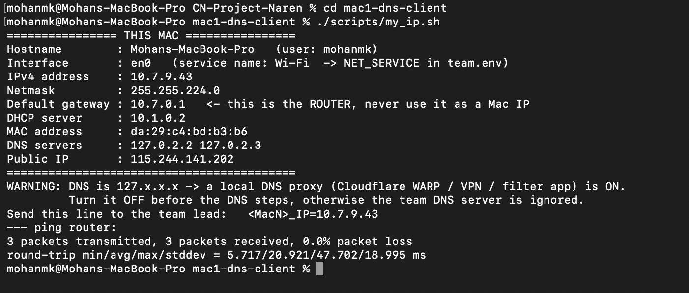
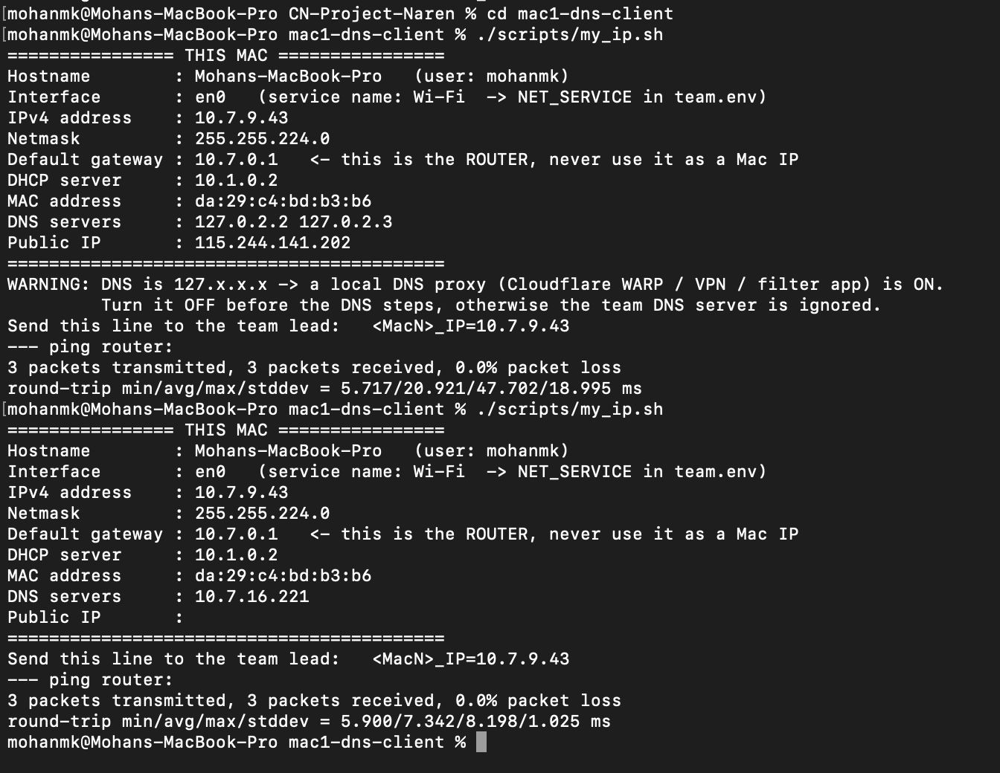
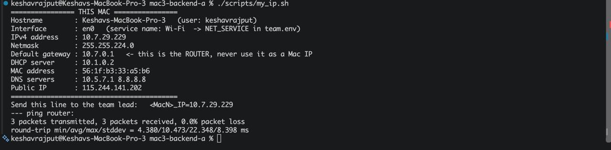

2. Our own DNS server
Mohan (Mac 1)
What we did
dnsmasq on Mac 1 answers app.team1.test and api.team1.test with the edge's IP. This is our own mini 'Route 53'.
Commands
./scripts/setup_dnsmasq.sh primary
What the evidence shows
- dnsmasq: syntax check OK, started, listening on UDP 10.7.9.43:53 and 127.0.0.1:53.
- Self-test: dig app.team1.test @10.7.9.43 returns A record 10.7.7.27 (the edge).
Why it works: DNS only turns a name into an IP. It never connects to anything. Clients then open TCP and TLS to that IP.

3. Edge server and private CA
Narendra (Mac 2)
What we did
nginx on Mac 2 terminates HTTPS on port 8443 and load-balances to the two backends. A small server hands out the team CA certificate.
Commands
./scripts/configure_nginx.sh ./scripts/serve_ca.sh
What the evidence shows
- nginx -t successful, nginx listening on *:8443.
- serve_ca.sh served http://10.7.7.27:8000/ca.crt; the access lines show all three teammates downloaded it (10.7.9.43, 10.7.25.176, 10.7.29.229).
Why it works: The certificate contains names (SAN) not IPs, so it stays valid even when DHCP changes an IP. Only the public CA is served, private keys never leave Mac 2.
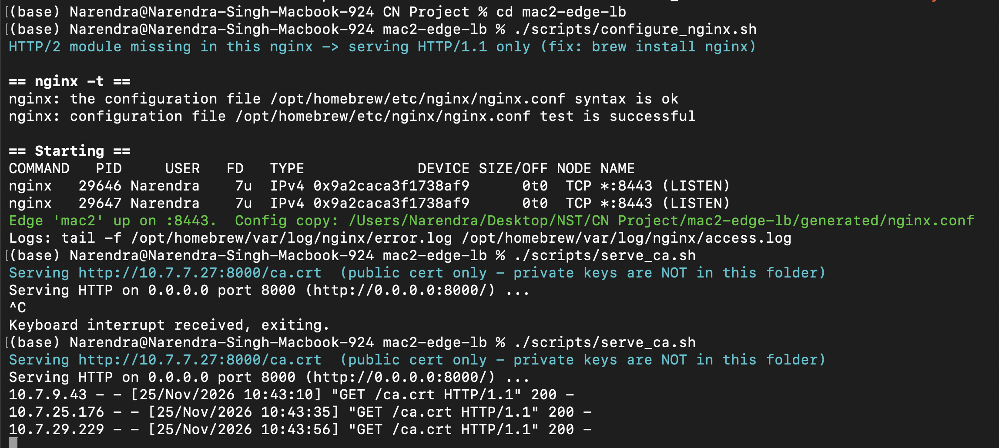

4. Clients trust the CA and use our DNS
Mohan, Keshav, Mayank
What we did
Each client downloads the team CA, installs it as trusted and points its resolver to Mac 1.
Commands
./scripts/trust_ca.sh && ./scripts/set_dns.sh primary
What the evidence shows
- All three print the SAME fingerprint sha256 62:F0:8C:C0:78:C5:16:67:...:2B:31:D9, so everyone trusts the same CA.
- networksetup now lists nameserver 10.7.9.43 on every client. Mayank's old manual DNS (1.1.1.1) and Keshav's empty setting were saved first and can be restored with set_dns.sh restore.
Why it works: This meets the 'at least two clients resolve through our DNS' requirement (we have three). It is also why curl works without -k.
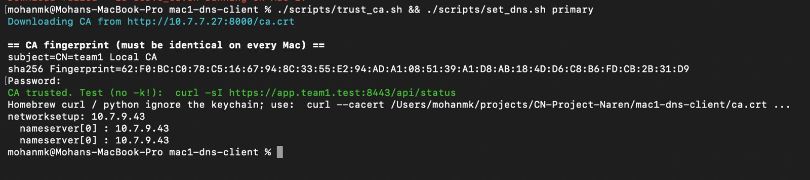


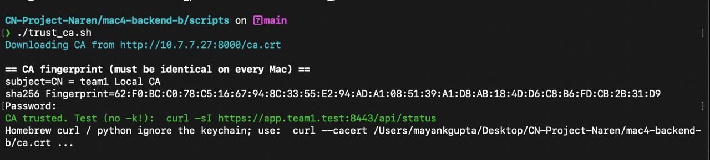
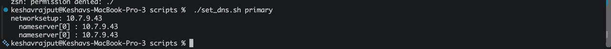
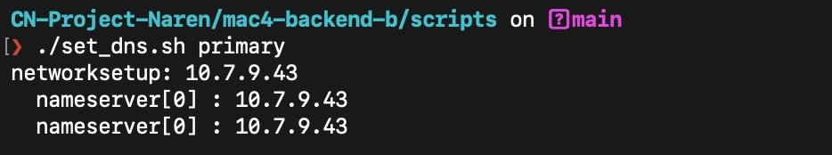
5. Layer-by-layer check: diagnose.sh
Mohan
What we did
One script checks IP, DNS, TCP, TLS, HTTP and the backends in that order. The first FAIL is the real problem.
Commands
./scripts/diagnose.sh
What the evidence shows
- First run: everything PASS except TLS: 'Verify return code: 21 (unable to verify the first certificate)'.
- But the HTTP check right below it returned 200 without -k, so the certificate really was trusted. The script was wrong, not the setup.
- Cause: the Mac's built-in openssl (LibreSSL) does not read the macOS keychain where trust_ca.sh put the CA. Fix: give openssl the CA file with -CAfile.
- After the fix every layer is PASS, including 'certificate verifies'.
Why it works: A great viva story: a false alarm found by reading the layers in order, and a fix that took one line.


6. Load balancing
Mohan
What we did
Six HTTPS requests to https://app.team1.test:8443/api/status without -k. The X-Backend header tells which backend answered.
Commands
./scripts/demo_lb.sh
What the evidence shows
- The answers alternate between Backend A and Backend B (round-robin), every response is 200 and X-Edge is mac2.
- The client never sees a backend IP, only the edge.
Why it works: This was the Phase 1 gate. Round-robin is nginx's default strategy.
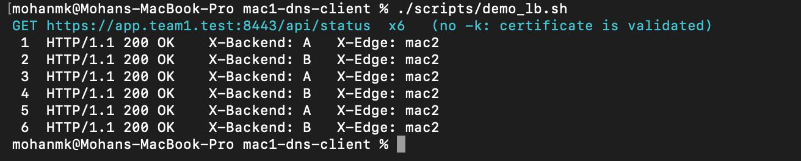
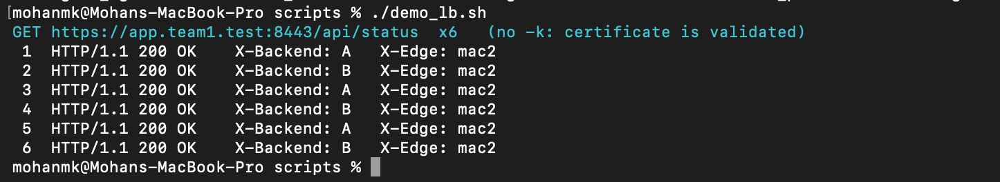
7. TLS proof
Mohan
What we did
Shows exactly how the secure connection is built and that the certificate is verified.
Commands
./scripts/demo_tls.sh
What the evidence shows
- TLS 1.3 with TLS_AES_256_GCM_SHA384, subject CN=app.team1.test, issuer CN=team1 Local CA, 'SSL certificate verify ok', 'Verify return code: 0 (ok)'.
- Forcing TLS 1.2 shows the full handshake (Certificate, Server Key Exchange, Finished), which is what Wireshark can display.
Why it works: Chain of trust: client trusts CA, CA signed the edge certificate, name matches the SAN. TLS ends at nginx; edge to backend is plain HTTP inside the LAN.
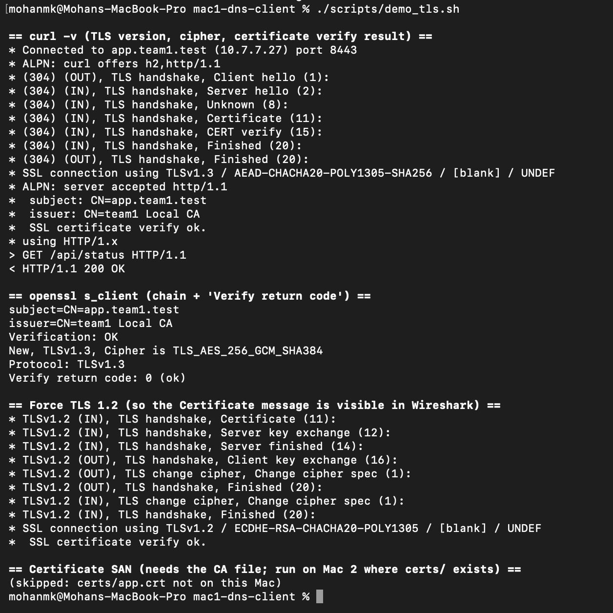